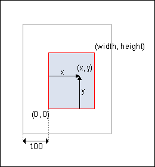
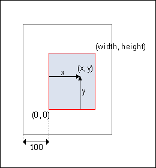

Graphics
Coordination system
In the default coordinate system of PDF,
the lower-left corner is at coordinates (0, 0), and the upper-right
corner is at coordinates (width, height). The default resolution is
72dpi.

An application can change coordinate system with invoking HPDF_Page_Concat().
For example, if an application invokes HPDF_Page_Concat (page, 0.5, 0, 0, 0.5, 100, 100) in the default state, the coodinate shown above is transformed to new coordinates shown in the figure below.

An application can change coordinate system with invoking HPDF_Page_Concat().
For example, if an application invokes HPDF_Page_Concat (page, 0.5, 0, 0, 0.5, 100, 100) in the default state, the coodinate shown above is transformed to new coordinates shown in the figure below.

Graphics mode
In Haru, each page-objects maintain the flags
named
graphics mode. The graphics mode corresponds to the graphics-object of
the specification of PDF.
The graphics mode is changed by invoking particular function, and the functions that can be invoked are decided by the value of the graphics mode.
The following figures show the relation of the graphics mode.

The graphics mode is changed by invoking particular function, and the functions that can be invoked are decided by the value of the graphics mode.
The following figures show the relation of the graphics mode.
Path Painting
A path is composed of straight and curved line
segments, and Paths define shapes and regions.
Vector graphics is drawn by the following steps.
List of Graphics State Operators
List of Color Operators
List of Path Construction Operators
List of Path Painting Operators
Vector graphics is drawn by the following steps.
- Set grahics states(such as line-width, dash-pattern, color...) with using "Graphics State Operators" or "Color Operators".
- Start to create new path with using HPDF_Page_MoveTo() or
HPDF_Page_Rectangle() or HPDF_Page_Arc() or HPDF_Page_Circle().
- Append a path with using "Path Construction Operators".
- Stroke or paint the path with using "Path Painting Operators".
List of Graphics State Operators
| function
name |
|
| 1 |
HPDF_Page_SetLineWidth |
| 2 |
HPDF_Page_SetLineCap |
| 3 |
HPDF_Page_SetLineJoin |
| 4 |
HPDF_Page_SetMiterLimit |
| 5 |
HPDF_Page_SetDash |
| 6 |
HPDF_Page_SetFlat |
| 7 |
HPDF_Page_Concat |
List of Color Operators
| function
name |
|
| 1 |
HPDF_Page_SetGrayFill |
| 2 |
HPDF_Page_SetGrayStroke |
| 3 |
HPDF_Page_SetRGBFill |
| 4 |
HPDF_Page_SetRGBStroke |
| 5 |
HPDF_Page_SetCMYKFill |
| 6 |
HPDF_Page_SetCMYKStroke |
List of Path Construction Operators
| function
name |
|
| 1 |
HPDF_Page_MoveTo |
| 2 |
HPDF_Page_LineTo |
| 3 |
HPDF_Page_CurveTo |
| 4 |
HPDF_Page_CurveTo2 |
| 5 |
HPDF_Page_CurveTo3 |
| 6 |
HPDF_Page_Rectangle |
| 7 |
HPDF_Page_Arc |
| 8 |
HPDF_Page_Circle |
List of Path Painting Operators
| function
name |
|
| 1 |
HPDF_Page_Stroke |
| 2 |
HPDF_Page_ClosePathStroke |
| 3 |
HPDF_Page_Fill |
| 4 |
HPDF_Page_Eofill |
| 5 |
HPDF_Page_FillStroke |
| 6 |
HPDF_Page_EofillStroke |
| 7 |
HPDF_Page_ClosePathFillStroke |
| 8 |
HPDF_Page_ClosePathEofillStroke |
| 9 |
HPDF_Page_EndPath |
Text Showing
A text is drawn by the following steps.

List of Text State Operator
List of Text Positioning Operators
List of Text Showing Operators
- Start showing text by invoking HPDF_Page_BeginText().
- Set text states(such as font, filling-color...)
with using "Text State Operators" or "Color Operators". At least
HPDF_Page_SetFontAndSize() must be invoked once before invoking "Text
Showing Operators".
- Set text positioning by invoking "Text Positioning Operators"
- Show text by invoking "Text Showing Operators"
- Repeat the step of 2-4 if necessary.
- Finish showing text by invoking HPDF_Page_EndText().
List of Text State Operator
| function
name |
|
| 1 |
HPDF_Page_SetCharSpace |
| 2 |
HPDF_Page_SetWordSpace |
| 3 |
HPDF_Page_SetHorizontalScalling |
| 4 |
HPDF_Page_SetTextLeading |
| 5 |
HPDF_Page_SetFontAndSize |
| 6 |
HPDF_Page_SetTextRenderingMode |
| 7 |
HPDF_Page_SetTextRaise |
List of Text Positioning Operators
| function
name |
|
| 1 |
HPDF_Page_MoveTextPos |
| 2 |
HPDF_Page_MoveTextPos2 |
| 3 |
HPDF_Page_SetTextMatrix |
List of Text Showing Operators
| function
name |
|
| 1 |
HPDF_Page_ShowText |
| 2 |
HPDF_Page_ShowTextNextLine |
| 3 |
HPDF_Page_ShowTextNextLineEx |
| 4 |
HPDF_Page_TextOut |
| 5 |
HPDF_Page_TextRect |
Images
There are two functions to draw image on
Haru. HPDF_DrawImage() is a simple function that shows image at
specified position and size. HPDF_DrawXObject is more advanced function.
List of Image Showing Operators
List of Image Showing Operators
| function
name |
|
| 1 |
HPDF_Page_ExecuteXObject |
| 2 |
HPDF_Page_DrawImage |
Colors
Colors are specified using three real
numbers (ie ones with a decimal
point) in the form R G B where each number defines the amount of red
(R), green (G) and blue (B) in a color. The valid numbers are from 0.0
to 1.0 inclusive.
Below is a table showing 216 example colors and their real notations:
NB The above table contains what is known as the "web safe" color
palette, it is also known by the following names: browser-safe palette,
Netscape palette,
216 color palette, Web palette or 6x6x6 color cube.
Historical note: It's purpose was to provide a consistent palette of colors for a wide variety of browsers and operating systems which at the time usually had 256 colors (8-bit).
The reason that 216 colors were used out of the possible palette of 256 colors is that this allowed an even sampling of color throughout the color space that can be realised on most displays by dividing it up into areas which represent one-sixth of the possible values of all color components of red, green and blue - hence we get a cube which has 6 possible areas of red, 6 of green and 6 of blue which together make up 6x6x6 = 216 combinations.
Today most screens are viewed in True color which uses 24-bits and uses the full range of 256 possible values for each red, green and blue color component which give 256x256x256 = 16777216 colors.
However, this can be quite daunting for non-artists to work with and the web safe palette is a useful starting point when considering color schemes.
Below is a table showing 216 example colors and their real notations:
| 0.0, 0.0, 0.0 | 0.0, 0.0, 0.2 | 0.0, 0.0, 0.4 | 0.0, 0.0, 0.6 | 0.0, 0.0, 0.8 | 0.0, 0.0, 1.0 |
| 0.0, 0.2, 0.0 | 0.0, 0.2, 0.2 | 0.0, 0.2, 0.4 | 0.0, 0.2, 0.6 | 0.0, 0.2, 0.8 | 0.0, 0.2, 1.0 |
| 0.0, 0.4, 0.0 | 0.0, 0.4, 0.2 | 0.0, 0.4, 0.4 | 0.0, 0.4, 0.6 | 0.0, 0.4, 0.8 | 0.0, 0.4, 1.0 |
| 0.0, 0.6, 0.0 | 0.0, 0.6, 0.2 | 0.0, 0.6, 0.4 | 0.0, 0.6, 0.6 | 0.0, 0.6, 0.8 | 0.0, 0.6, 1.0 |
| 0.0, 0.8, 0.0 | 0.0, 0.8, 0.2 | 0.0, 0.8, 0.4 | 0.0, 0.8, 0.6 | 0.0, 0.8, 0.8 | 0.0, 0.8, 1.0 |
| 0.0, 1.0, 0.0 | 0.0, 1.0, 0.2 | 0.0, 1.0, 0.4 | 0.0, 1.0, 0.6 | 0.0, 1.0, 0.8 | 0.0, 1.0, 1.0 |
| 0.2, 0.0, 0.0 | 0.2, 0.0, 0.2 | 0.2, 0.0, 0.4 | 0.2, 0.0, 0.6 | 0.2, 0.0, 0.8 | 0.2, 0.0, 1.0 |
| 0.2, 0.2, 0.0 | 0.2, 0.2, 0.2 | 0.2, 0.2, 0.4 | 0.2, 0.2, 0.6 | 0.2, 0.2, 0.8 | 0.2, 0.2, 1.0 |
| 0.2, 0.4, 0.0 | 0.2, 0.4, 0.2 | 0.2, 0.4, 0.4 | 0.2, 0.4, 0.6 | 0.2, 0.4, 0.8 | 0.2, 0.4, 1.0 |
| 0.2, 0.6, 0.0 | 0.2, 0.6, 0.2 | 0.2, 0.6, 0.4 | 0.2, 0.6, 0.6 | 0.2, 0.6, 0.8 | 0.2, 0.6, 1.0 |
| 0.2, 0.8, 0.0 | 0.2, 0.8, 0.2 | 0.2, 0.8, 0.4 | 0.2, 0.8, 0.6 | 0.2, 0.8, 0.8 | 0.2, 0.8, 1.0 |
| 0.2, 1.0, 0.0 | 0.2, 1.0, 0.2 | 0.2, 1.0, 0.4 | 0.2, 1.0, 0.6 | 0.2, 1.0, 0.8 | 0.2, 1.0, 1.0 |
| 0.4, 0.0, 0.0 | 0.4, 0.0, 0.2 | 0.4, 0.0, 0.4 | 0.4, 0.0, 0.6 | 0.4, 0.0, 0.8 | 0.4, 0.0, 1.0 |
| 0.4, 0.2, 0.0 | 0.4, 0.2, 0.2 | 0.4, 0.2, 0.4 | 0.4, 0.2, 0.6 | 0.4, 0.2, 0.8 | 0.4, 0.2, 1.0 |
| 0.4, 0.4, 0.0 | 0.4, 0.4, 0.2 | 0.4, 0.4, 0.4 | 0.4, 0.4, 0.6 | 0.4, 0.4, 0.8 | 0.4, 0.4, 1.0 |
| 0.4, 0.6, 0.0 | 0.4, 0.6, 0.2 | 0.4, 0.6, 0.4 | 0.4, 0.6, 0.6 | 0.4, 0.6, 0.8 | 0.4, 0.6, 1.0 |
| 0.4, 0.8, 0.0 | 0.4, 0.8, 0.2 | 0.4, 0.8, 0.4 | 0.4, 0.8, 0.6 | 0.4, 0.8, 0.8 | 0.4, 0.8, 1.0 |
| 0.4, 1.0, 0.0 | 0.4, 1.0, 0.2 | 0.4, 1.0, 0.4 | 0.4, 1.0, 0.6 | 0.4, 1.0, 0.8 | 0.4, 1.0, 1.0 |
| 0.6, 0.0, 0.0 | 0.6, 0.0, 0.2 | 0.6, 0.0, 0.4 | 0.6, 0.0, 0.6 | 0.6, 0.0, 0.8 | 0.6, 0.0, 1.0 |
| 0.6, 0.2, 0.0 | 0.6, 0.2, 0.2 | 0.6, 0.2, 0.4 | 0.6, 0.2, 0.6 | 0.6, 0.2, 0.8 | 0.6, 0.2, 1.0 |
| 0.6, 0.4, 0.0 | 0.6, 0.4, 0.2 | 0.6, 0.4, 0.4 | 0.6, 0.4, 0.6 | 0.6, 0.4, 0.8 | 0.6, 0.4, 1.0 |
| 0.6, 0.6, 0.0 | 0.6, 0.6, 0.2 | 0.6, 0.6, 0.4 | 0.6, 0.6, 0.6 | 0.6, 0.6, 0.8 | 0.6, 0.6, 1.0 |
| 0.6, 0.8, 0.0 | 0.6, 0.8, 0.2 | 0.6, 0.8, 0.4 | 0.6, 0.8, 0.6 | 0.6, 0.8, 0.8 | 0.6, 0.8, 1.0 |
| 0.6, 1.0, 0.0 | 0.6, 1.0, 0.2 | 0.6, 1.0, 0.4 | 0.6, 1.0, 0.6 | 0.6, 1.0, 0.8 | 0.6, 1.0, 1.0 |
| 0.8, 0.0, 0.0 | 0.8, 0.0, 0.2 | 0.8, 0.0, 0.4 | 0.8, 0.0, 0.6 | 0.8, 0.0, 0.8 | 0.8, 0.0, 1.0 |
| 0.8, 0.2, 0.0 | 0.8, 0.2, 0.2 | 0.8, 0.2, 0.4 | 0.8, 0.2, 0.6 | 0.8, 0.2, 0.8 | 0.8, 0.2, 1.0 |
| 0.8, 0.4, 0.0 | 0.8, 0.4, 0.2 | 0.8, 0.4, 0.4 | 0.8, 0.4, 0.6 | 0.8, 0.4, 0.8 | 0.8, 0.4, 1.0 |
| 0.8, 0.6, 0.0 | 0.8, 0.6, 0.2 | 0.8, 0.6, 0.4 | 0.8, 0.6, 0.6 | 0.8, 0.6, 0.8 | 0.8, 0.6, 1.0 |
| 0.8, 0.8, 0.0 | 0.8, 0.8, 0.2 | 0.8, 0.8, 0.4 | 0.8, 0.8, 0.6 | 0.8, 0.8, 0.8 | 0.8, 0.8, 1.0 |
| 0.8, 1.0, 0.0 | 0.8, 1.0, 0.2 | 0.8, 1.0, 0.4 | 0.8, 1.0, 0.6 | 0.8, 1.0, 0.8 | 0.8, 1.0, 1.0 |
| 1.0, 0.0, 0.0 | 1.0, 0.0, 0.2 | 1.0, 0.0, 0.4 | 1.0, 0.0, 0.6 | 1.0, 0.0, 0.8 | 1.0, 0.0, 1.0 |
| 1.0, 0.2, 0.0 | 1.0, 0.2, 0.2 | 1.0, 0.2, 0.4 | 1.0, 0.2, 0.6 | 1.0, 0.2, 0.8 | 1.0, 0.2, 1.0 |
| 1.0, 0.4, 0.0 | 1.0, 0.4, 0.2 | 1.0, 0.4, 0.4 | 1.0, 0.4, 0.6 | 1.0, 0.4, 0.8 | 1.0, 0.4, 1.0 |
| 1.0, 0.6, 0.0 | 1.0, 0.6, 0.2 | 1.0, 0.6, 0.4 | 1.0, 0.6, 0.6 | 1.0, 0.6, 0.8 | 1.0, 0.6, 1.0 |
| 1.0, 0.8, 0.0 | 1.0, 0.8, 0.2 | 1.0, 0.8, 0.4 | 1.0, 0.8, 0.6 | 1.0, 0.8, 0.8 | 1.0, 0.8, 1.0 |
| 1.0, 1.0, 0.0 | 1.0, 1.0, 0.2 | 1.0, 1.0, 0.4 | 1.0, 1.0, 0.6 | 1.0, 1.0, 0.8 | 1.0, 1.0, 1.0 |
Historical note: It's purpose was to provide a consistent palette of colors for a wide variety of browsers and operating systems which at the time usually had 256 colors (8-bit).
The reason that 216 colors were used out of the possible palette of 256 colors is that this allowed an even sampling of color throughout the color space that can be realised on most displays by dividing it up into areas which represent one-sixth of the possible values of all color components of red, green and blue - hence we get a cube which has 6 possible areas of red, 6 of green and 6 of blue which together make up 6x6x6 = 216 combinations.
Today most screens are viewed in True color which uses 24-bits and uses the full range of 256 possible values for each red, green and blue color component which give 256x256x256 = 16777216 colors.
However, this can be quite daunting for non-artists to work with and the web safe palette is a useful starting point when considering color schemes.